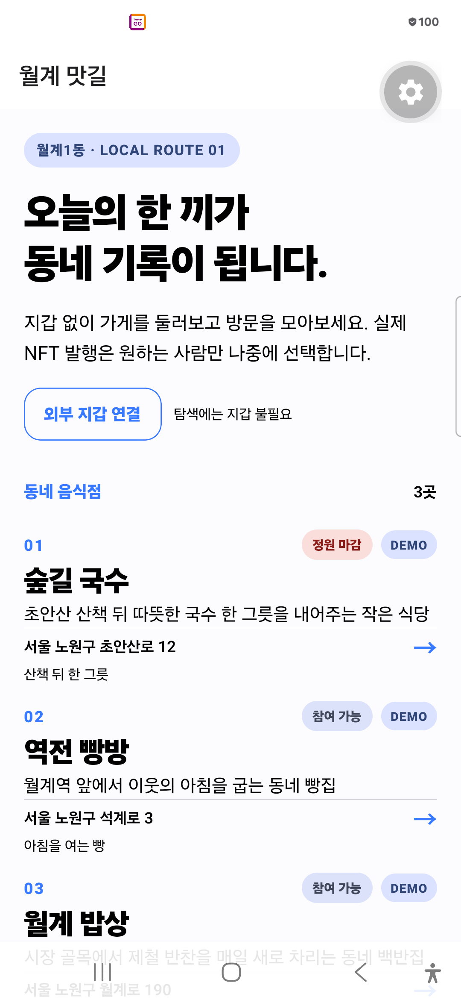
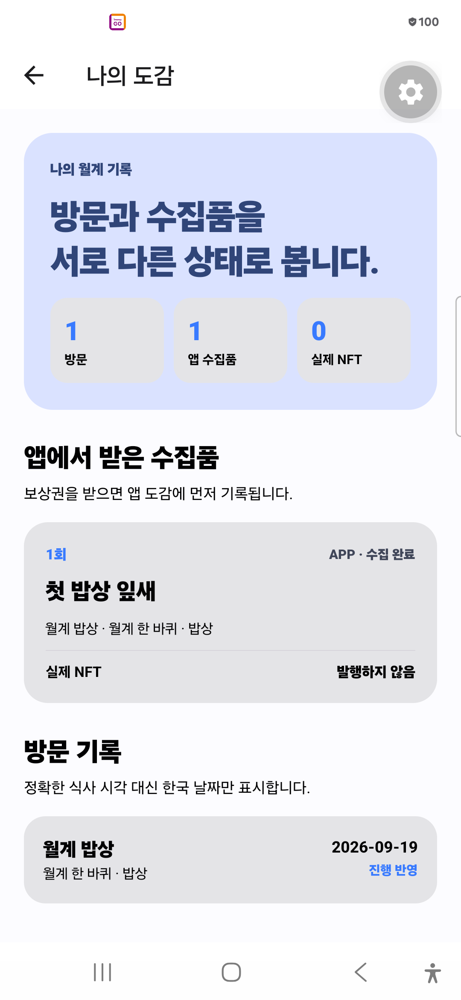
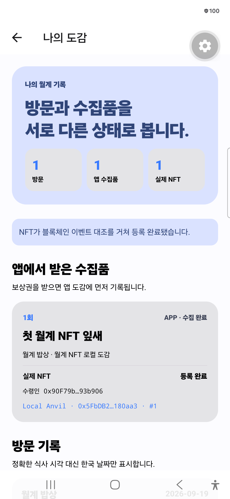
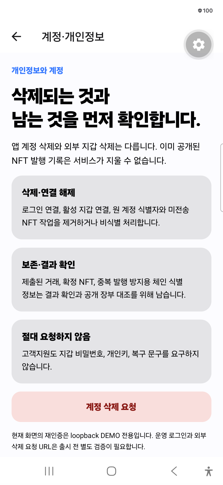

월계1동에서 시작하는 일곱 장면
가게를 발견하고,
방문을 수집한다.
지갑은 마지막 선택입니다. 음식점 탐색과 실제 이용 인증이 먼저입니다.
30필수 시험 PASS
2외부 환경 BLOCKED
4아직 NOT_RUN
“다음 가게”가
보이지 않는 문제
익숙한 가게에 소비가 반복되고 새로운 동네 가게를 발견하기 어렵다는 것이 우리의 출발 가설입니다.
방문이 다음 탐색으로 이어지는 길
- 탐색지갑 없이 음식점 보기
- 점주 확인자기 점포 권한만
- 방문 인증한 사람·한 번
- 앱 도감보상권을 먼저 기록
- 외부 지갑원할 때만 주소 서명
- NFT 등록기존 체인·중복 방지
- 다음 가게이유가 보이는 추천
말이 아니라
Android에서 확인했습니다.
Samsung SM-S928N · Android 16 · loopback DEMO / Local Anvil




사용자 자산을 맡지 않고도
발행은 끝까지 추적합니다.
Android탐색·방문·도감
API + PostgreSQL권한·보상·고정 수령인
Outbox + Workerlease heartbeat·복구
기존 블록체인계약·수령인·token ID
- 개인키·복구 문구를 받지 않음
- 송금·approve·permit·스왑을 요청하지 않음
- receipt뿐 아니라 계약·수령인·이벤트·owner·locked 대조
- 앱 계정 삭제가 외부 지갑·공개 NFT 삭제라고 말하지 않음
완성도는 기능 수보다
실패를 구분하는 힘입니다.
36개 ID를 바꾸지 않고 실제 환경별 결과를 기록했습니다.
PASS 30QR·보상·지갑·발행·계약·삭제·개인정보
BLOCKED 2동일 세션 주소 변경·미지원 스마트 지갑
NOT_RUN 4release·운영 환경 경계·카메라·실계정 전환